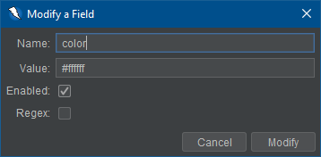

Это расширение обработчика форм позволяет настраивать значения, используемые в формах, на основе имен полей.
С помощью этого дополнения пользователь может создавать новые поля для каждого отдельного поля, которое он хочет установить. значение. Кроме того, пользователь может изменить имя и значение любого существующего поля, чтобы оно соответствовало полю, которое они пытаются установить. Любое поле также может быть отключено или удалено пользователем, чтобы пользовательские значения не используются. Имена полей, значения и включенный статус будут сохранены даже после завершения сеанса ZAP. заключил.
Надстройка предоставляет набор имен полей по умолчанию, которые можно найти в форме, и соответствующий значение для каждого поля по умолчанию. Эти значения по умолчанию могут быть отключены, изменены и удалены, если желание пользователя.
Обработчик формы можно найти в параметрах. При выборе вкладки «Обработчик форм» отображается таблица со всеми существующими значениями, которые в настоящее время определены. Пример показан ниже.

Для определения дополнительных значений полей можно нажать кнопку Добавить. Это вызовет диалог для пользователя, чтобы предоставить информацию о поле.

При добавлении нового поля обратите внимание на следующее:
Расширение позволяет пользователю изменять значения и имена существующих полей. Это можно сделать выбрав поле, которое вы хотите изменить, и нажав кнопку Изменить.
При изменении поля пользователь ограничен теми же правилами, что и при создании нового. Большинство общим ограничением при изменении поля является то, что имя не может совпадать с именем существующего поля. (т.е. без повторяющихся полей)
Пользователь может удалить поля в любое время. Для этого просто выберите поле, которое вы хотите удалить, и нажмите кнопку Удалить. Обратите внимание, что вам будет предложено подтвердить удаление, прежде чем продолжаться, если не установлен флажок Удалить без подтверждения.
Пользователь может обнаружить, что он не хочет определять каждое поле в форме, а скорее определяет несколько избранных в пределах форма.
Любое поле, которое не определено в надстройке обработчика формы, будет использовать значение ZAP по умолчанию, созданное для соответствия каждый тип поля. (Например: текстовое поле будет иметь значение «ZAP»)